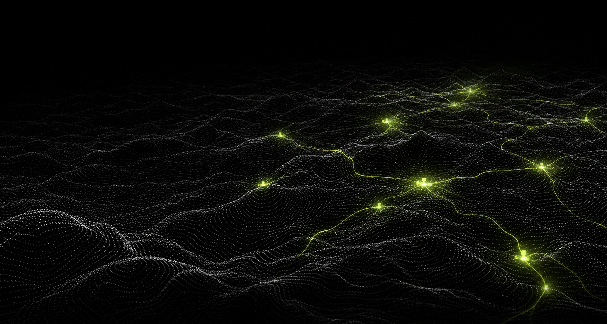
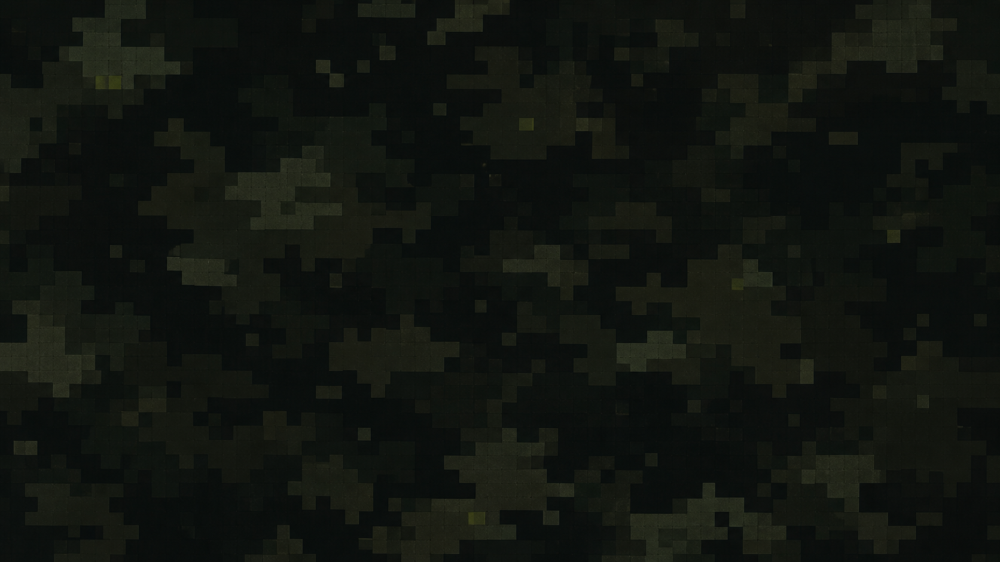

--ds-bg-canvas
후보 컨셉
신호는 선명하게.
신호는 선명하게.
구조는 유연하게.
현재 컨셉을 시맨틱 토큰, 재사용 컴포넌트, 독립 자산으로 분리했습니다. 컨셉이 바뀌어도 IA와 화면 계약은 유지됩니다.
SEMANTIC TOKENS
색상 역할
화면은 색상값이 아니라 역할 이름을 사용합니다.
--ds-bg-surface--ds-text-primary--ds-accent--ds-status-info--ds-status-dangerCOMPONENT CONTRACTS
기본 컴포넌트
외형은 후보 컨셉을 따르지만 상태와 데이터 계약은 테마에 종속되지 않습니다.
Actions
Form control
Status
현재 단계
진행 중
검토 필요
Learning card
우선 학습
생성형 AI 활용 원칙
현재 단계에서 필요한 핵심 내용을 먼저 확인합니다.
CONCEPT ASSETS
교체 가능한 이미지 자산
테마 디렉터리에 격리되어 다음 컨셉으로 일괄 교체할 수 있습니다.

